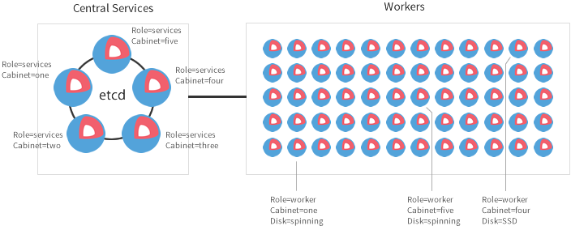

Linux for Massive Server Deployments

Кластер (Гроздь)
Объединение однородных элементов, которое может рассматриваться как единое целое...
- os: chromeos fork
- coordination: etcd
- packages and services: docker
- init system: fleet on systemd
- overlay network: flannel
Alex Polivi
Mozzila sysadmin

core OS
- fork of chromeos--
- atomic updates (fast patch)
- read-only partition for root
- fast boot time
- cloud-config
locksmith
locksmith is a reboot manager
Updates

Alpha->Betta->Stable
cloud-config (yaml)
#cloud-config
coreos:
units:
- name: etcd.service
command: start
users:
- name: core
passwd: $1$allJZawX$00S5T756I5PGdQga5qhqv1
write_files:
- path: /etc/resolv.conf
content: |
nameserver 192.0.2.2
nameserver 192.0.2.3
coreos-cloudinit -validate -from-file=cfg.yaml
distributed, consistent key value store
etcdctl set /foo/bar "Hello world" --ttl 60
etcdctl get /foo/bar
etcdctl watch /foo/bar --forever
etcdctl exec-watch /foo/bar -- sh -c "env | grep ETCD"
etcdctl ls --recursive -p
etcdctl rm /path/to/dir --recursive
curl -L http://etcd.com:4001/v2/keys/mykey -XPUT -d value="this is awesome"
raft - consensus algorythm

link 1 link 2

fleet
systemd + etcd
distributed init system
systemd
[Unit]
Description=My Advanced Service
After=etcd.service
After=docker.service
[Service]
TimeoutStartSec=0
ExecStartPre=-/usr/bin/docker kill apache1
ExecStartPre=-/usr/bin/docker rm apache1
ExecStartPre=/usr/bin/docker pull coreos/apache
ExecStart=/usr/bin/docker run --name apache1 -p 80:80 coreos/apache /usr/sbin/apache2ctl -D FOREGROUND
ExecStartPost=/usr/bin/etcdctl set /domains/example.com/10.10.10.123:8081 running
ExecStop=/usr/bin/docker stop apache1
ExecStopPost=/usr/bin/etcdctl rm /domains/example.com/10.10.10.123:8081
[Install]
WantedBy=multi-user.target
systemd man page
fleetctl
alias f=fleetctl
f list-machines
f list-units
f list-unit-files
f submit/destroy examples/hello.service
f cat hello.service
f load/unload hello.service
f start/stop goodbye.service
f journal hello.service
MachineID, MachineOf, MachineMetadata, Conflicts, Global
installdocker
appc spec read
flannel

fleetctl
#cloud-conf
...
coreos:
units:
- name: flanneld.service
drop-ins:
- name: 50-network-config.conf
content: |
[Service]
ExecStartPre=/usr/bin/etcdctl set /coreos.com/network/config \
'{ "Network": "10.1.0.0/16" }'
command: start